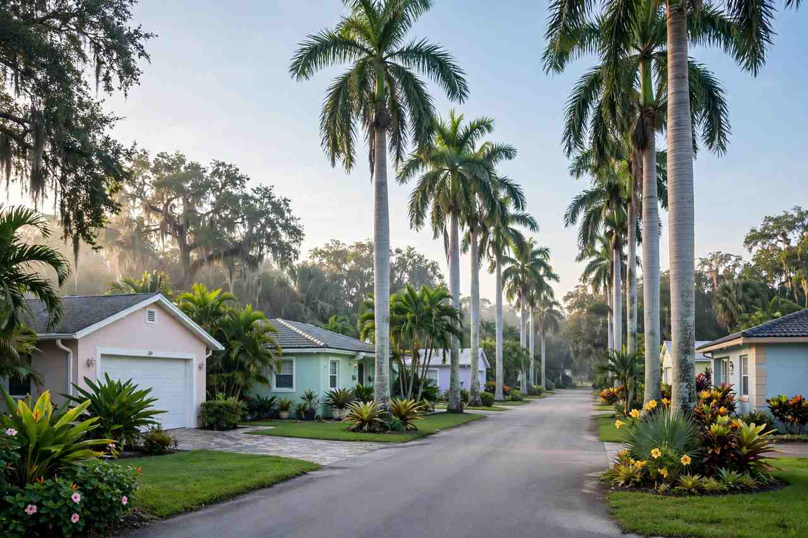

Rodent Control · Cocoa, FL
Fast Rodent Control in Cocoa, FL
Rats in the attic or mice in the kitchen in Cocoa? Murvo provides same-day rodent control with local crews who inspect first, remove the animals already inside, and seal the entry points they used. Every job is quoted flat-rate in writing before work begins and backed by a written guarantee, covering homes and businesses across Brevard County. Service covers 2 ZIP codes across Brevard County, including 32922, 32926, with same-day appointments where schedules allow.
24/7Availability
2ZIP codes covered
Same-dayResponse
Licensed · Upfront options · Written guarantees · Fully insured
Cocoa at a glance
Local Rodent Control for Cocoa, FL.
Brevard County
Countyeastern Florida
RegionPalm Bay · 30 mi
Nearest metro255 miles southeast of Tallahassee
From Tallahassee2
ZIP codes covered Service by service in Cocoa
Rodent Control Services Available in Cocoa
Rodent-only specialists serving Cocoa and Brevard County. Every service below is explained in local terms - the species involved, the entry points that matter in ranch and stucco homes, waterfront and canal homes, condos, and vacation rentals, and the seasonal timing that decides whether a fix lasts.
- 01Rodent Control↗
- 02Rodent Inspection↗
- 03Rodent Removal↗
- 04Rodent Exclusion↗
- 05Rodent Proofing↗
- 06Rat Control↗
- 07Mice Control↗
- 08Mouse Removal↗
- 09Rat Removal↗
- 10Rodent Trapping↗
- 11Rodent Baiting↗
- 12Rodenticide Application↗
- 13Attic Rodent Removal↗
- 14Crawl Space Rodent Removal↗
- 15Wall Rodent Removal↗
- 16Kitchen Rodent Control↗
- 17Garage Rodent Control↗
- 18Commercial Rodent Control↗
- 19Residential Rodent Control↗
- 20Emergency Rodent Removal↗
- 21Same-Day Rodent Control↗
- 22Rodent Damage Repair↗
- 23Rodent Waste Cleanup↗
- 24Rodent Disinfection↗
- 25Rodent Odor Removal↗
- 26Dead Rodent Removal↗
- 27Rodent Dropping Cleanup↗
- 28Rodent Exclusion for Roofs↗
- 29Rodent Exclusion for Vents↗
- 30Rodent Exclusion for Chimneys↗
Rodent Control in Cocoa
Rodent Control in Cocoa
In Cocoa, ranch and stucco homes, waterfront and canal homes, condos, and vacation rentals give rodents warmth, shelter, and easy routes through rooflines, eaves and soffits, attic and gable vents, pool equipment areas, and garage door seals, especially once nights turn cold across Brevard County. Our licensed, insured technicians identify the species, map active runways, and build a control plan around your home rather than a generic spray. Every visit is documented with photos, trap records, and clear next steps for your household.
When you need rodent control in Cocoa, the job starts with what is actually happening in your part of Brevard County. Murvo crews work Cocoa every week, so they know how Roof rat (Rattus rattus) and Norway rat (Rattus norvegicus) behave around ranch and stucco homes, waterfront and canal homes, condos, and vacation rentals here - and where they get in: rooflines, eaves and soffits, attic and gable vents, pool equipment areas, and garage door seals. We arrive equipped for the full job, confirm the flat rate in writing before work begins, and cover the whole Cocoa area, including Cocoa West, Tropical Park. No call-center runaround and no open-ended hourly billing - just a local crew, a clear plan, and a written quote you approve first. The Cocoa crews who handle rodent control also handle the follow-through - proofing, cleanup, and monitoring - so one visit can close the whole problem.
We start by identifying whether Roof rat (Rattus rattus), Norway rat (Rattus norvegicus), or both are active, because each species nests, feeds, and travels differently. Traps are placed on proven runways along walls, beams, and pipe runs, checked on schedule, and adjusted as catches change. Once numbers fall, exclusion sealing closes the route back in, droppings and nesting debris are removed hygienically, and follow-up monitoring checks the attic, crawl space, and kitchen until readings stay clear. Nothing is sealed while animals remain inside. That order protects your home.
Booking takes one call, and same-day appointments are available in most Cocoa areas. At the final visit we walk the finished work together and confirm monitoring is clear. Your technician inspects first, talks you through the plan in plain language, and only starts once you approve the written quote. Work is carried out in stages, with trap checks and sealing visits booked ahead. Questions are answered at every stage, day or night.
Need help quickly in Cocoa? Call any time — the emergency line is staffed 24/7, and same-day rodent control appointments are available in most areas. We inspect first, explain the plan in plain language, and put the flat rate in writing before work starts. The written quote for your Cocoa property will spell out exactly which of these applies before any work starts.
Murvo does not quote rodent control sight unseen, because species, activity, and sealing needs change the work involved. After inspection you get one flat-rate written quote, and that is the figure you pay. As national context only, Angi's 2026 figures put rat and mouse removal and control at an average of $396, with a typical range of $189 to $655 — a benchmark, not a Murvo price.
Rodent Inspection in Cocoa
Rodent Inspection in Cocoa
In ranch and stucco homes, waterfront and canal homes, condos, and vacation rentals, the gap that matters is seldom the gap you can see. Rodents enter through rooflines, eaves and soffits, attic and gable vents, pool equipment areas, and garage door seals and travel hidden routes, so a rodent inspection in Brevard County has to look behind, above, and below. Our technicians trace those routes systematically and explain, in plain language, which findings demand action now.
When you need rodent inspection in Cocoa, the job starts with what is actually happening in your part of Brevard County. Murvo crews work Cocoa every week, so they know how Roof rat (Rattus rattus) and Norway rat (Rattus norvegicus) behave around ranch and stucco homes, waterfront and canal homes, condos, and vacation rentals here - and where they get in: rooflines, eaves and soffits, attic and gable vents, pool equipment areas, and garage door seals. We arrive equipped for the full job, confirm the flat rate in writing before work begins, and cover the whole Cocoa area, including Cocoa West, Tropical Park. No call-center runaround and no open-ended hourly billing - just a local crew, a clear plan, and a written quote you approve first. Around Tropical Park, Sharpes, Rockledge, the pattern is similar: Norway rat (Rattus norvegicus) finds rooflines, eaves and soffits, attic and gable vents, pool equipment areas, and garage door seals first, and lasting rodent inspection has to close those routes.
Timing often tells the story first. Technicians use what you report to focus the search, then verify it against physical evidence throughout ranch and stucco homes, waterfront and canal homes, condos, and vacation rentals. They check wiring and insulation for damage, test whether gaps at rooflines, eaves and soffits, attic and gable vents, pool equipment areas, and garage door seals are active, and mark each opening by size and species. The written report that follows ranks repairs clearly, so decisions rest on findings rather than guesswork or pressure. Noises at dusk suggest one pattern; droppings near stored food suggest another. Each recommendation in that report traces back to a photographed finding, keeping the whole assessment accountable.
Your part is simple: point out noises, droppings, and any past problems. Before leaving, you walk through the evidence together, discuss priorities, and decide what happens next, with no obligation attached. Ours is everything else. A background-checked technician arrives on time, protects access areas, and inspects inside and out against a set checklist. If you decide to proceed, those findings become the working plan, so no second survey is needed before approved repairs begin.
You do not have to wait days for answers in Cocoa. Same-day rodent inspection appointments are available in most areas, urgent calls are taken 24/7, and most home inspections take under an hour. You finish the visit with photos, written findings, and flat-rate pricing for anything we recommend. The written quote for your Cocoa property will spell out exactly which of these applies before any work starts.
Nationally, a professional rodent inspection typically runs $100 to $200 according to Angi's 2026 data, and it is often credited toward the job if you proceed. Murvo confirms your exact rodent inspection price before the visit and quotes any follow-up work as a flat rate in writing after inspection, so the figure you approve is the figure you pay, with no hourly billing.
Rodent Removal in Cocoa
Rodent Removal in Cocoa
How quickly should you act once droppings appear in living areas? Promptly, because contamination builds daily and young rodents mature fast. Murvo responds with licensed, insured, background-checked technicians who remove animals hygienically, explain when each room is safe again, and back the completed removal with a written workmanship guarantee.
When you need rodent removal in Cocoa, the job starts with what is actually happening in your part of Brevard County. Murvo crews work Cocoa every week, so they know how Roof rat (Rattus rattus) and Norway rat (Rattus norvegicus) behave around ranch and stucco homes, waterfront and canal homes, condos, and vacation rentals here - and where they get in: rooflines, eaves and soffits, attic and gable vents, pool equipment areas, and garage door seals. We arrive equipped for the full job, confirm the flat rate in writing before work begins, and cover the whole Cocoa area, including Cocoa West, Tropical Park. No call-center runaround and no open-ended hourly billing - just a local crew, a clear plan, and a written quote you approve first. The Cocoa crews who handle rodent removal also handle the follow-through - proofing, cleanup, and monitoring - so one visit can close the whole problem.
Why trap first instead of reaching for poison? Because trapped animals can be counted, removed, and disposed of hygienically, while poisoned animals can die where nobody can reach them. Technicians therefore match traps to species and setting, work attics, voids, and kitchens in sequence, and retrieve any carcass promptly. Contaminated nesting material is bagged carefully, affected surfaces are disinfected before any cleaning, and dry sweeping of droppings is never used, since that spreads contamination into the air. The sequence ends with monitoring, because removal without a confirming check is a claim rather than a result.
Once removal is underway, expect short, predictable visits. When catches reach zero, monitoring confirms it, sealing is discussed, and the job closes with a walkthrough and your guarantee paperwork in hand before we leave. Your technician checks each mapped trap, removes catches hygienically, resets what is still needed, and updates the record with you. At close, prevention advice is tailored to what actually attracted rodents to your property, not copied from a generic checklist.
For active infestations in Cocoa, rodent removal can usually start the same day you call, and our team answers 24/7 when a rodent is loose in a living area. The first visit confirms activity and sets traps straight away; return visits then clear and reset them until monitoring shows the property is completely clear. In Brevard County, most cases involve the Roof rat (Rattus rattus) and the Norway rat (Rattus norvegicus), so the inspection focuses on their routes first.
How many animals are active, which species they are, and how much sealing follows removal all shape the price, so we assess first and then quote one flat rate in writing. Angi's 2026 national context — an average of $396 and a typical $189 to $655 range for rat and mouse removal — is provided for comparison only; your written quote is the exact Murvo figure.
Rodent Exclusion in Cocoa
Rodent Exclusion in Cocoa
Exclusion is also the safest long-term strategy for Cocoa homes, because a sealed house needs far less bait and fewer repeat treatments. Murvo's licensed, insured crews finish roof, vent, and chimney work to weatherproof standards, walk every sealed opening with you afterwards, and back the result with a written workmanship guarantee you can hold us to.
When you need rodent exclusion in Cocoa, the job starts with what is actually happening in your part of Brevard County. Murvo crews work Cocoa every week, so they know how Roof rat (Rattus rattus) and Norway rat (Rattus norvegicus) behave around ranch and stucco homes, waterfront and canal homes, condos, and vacation rentals here - and where they get in: rooflines, eaves and soffits, attic and gable vents, pool equipment areas, and garage door seals. We arrive equipped for the full job, confirm the flat rate in writing before work begins, and cover the whole Cocoa area, including Cocoa West, Tropical Park. No call-center runaround and no open-ended hourly billing - just a local crew, a clear plan, and a written quote you approve first. Around Tropical Park, Sharpes, Rockledge, the pattern is similar: Norway rat (Rattus norvegicus) finds rooflines, eaves and soffits, attic and gable vents, pool equipment areas, and garage door seals first, and lasting rodent exclusion has to close those routes.
The sequence matters as much as the materials. Because a properly sealed home needs far less ongoing treatment, exclusion also lowers long-term reliance on bait. A later monitoring check tests the work honestly, revisiting each sealed point for fresh rub marks, droppings, or gnawing. Active openings are closed first, inactive weaknesses next, and purely cosmetic gaps last, so protection arrives where pressure is highest. Photographs record every finished seal with its location, building a reference you keep. The final monitoring visit therefore matters as much as the sealing day itself, and its findings are shared.
Before sealing day, confirm pets are secured and access to the roofline and foundation is clear. Afterwards you receive the photographs, the guarantee, and a date for the follow-up check that confirms everything is holding as intended. The crew then works through the agreed list, checks that no animals remain inside, and fits each seal cleanly. If monitoring ever finds fresh activity at a sealed point, that written inventory tells us exactly what to inspect first.
The first step is a survey, and in Cocoa we can often schedule that survey the same day you call about rodent exclusion. Sealing follows once active animals are cleared — nothing is ever sealed inside — and most homes are fully sealed within days, with entry points near wiring or food areas handled first. That is also why Murvo pairs removal with exclusion in Cocoa - treating the animal without closing rooflines, eaves and soffits, attic and gable vents, pool equipment areas, and garage door seals rarely lasts.
After the survey of your Cocoa home, every opening that needs sealing is listed and priced as one flat-rate written quote, so you pay only for the work your property needs. For national context, Angi's 2026 data puts basic exclusion at $200 to $600 depending on access and the number of openings; that benchmark is not a Murvo price.
Rodent Proofing in Cocoa
Rodent Proofing in Cocoa
The best rodent problem is the one that never starts. Rodent proofing in Cocoa hardens your home before Roof rat (Rattus rattus) and Norway rat (Rattus norvegicus) move in: sealing gaps, screening vents, fitting door sweeps, and removing the food and shelter that attract them. Murvo surveys the whole property, prioritizes the work, and gives one flat-rate written quote for the work.
When you need rodent proofing in Cocoa, the job starts with what is actually happening in your part of Brevard County. Murvo crews work Cocoa every week, so they know how Roof rat (Rattus rattus) and Norway rat (Rattus norvegicus) behave around ranch and stucco homes, waterfront and canal homes, condos, and vacation rentals here - and where they get in: rooflines, eaves and soffits, attic and gable vents, pool equipment areas, and garage door seals. We arrive equipped for the full job, confirm the flat rate in writing before work begins, and cover the whole Cocoa area, including Cocoa West, Tropical Park. No call-center runaround and no open-ended hourly billing - just a local crew, a clear plan, and a written quote you approve first. Coverage for rodent proofing spans 2 ZIP codes in Brevard County, including 32922, 32926.
Where proofing overlaps with structural exclusion, we use the same chew-resistant materials: copper mesh, hardware cloth, metal flashing, and durable sealants matched to each opening. Around kitchens, we coordinate sealing behind units and along pipe runs; in garages, we tackle stored-food and clutter harborage directly. The written plan distinguishes homeowner tasks from professional work, and seasonal re-checks after completion catch new gaps early, before they can turn into another indoor infestation for your household. That keeps protection current year after year.
On proofing day, expect one tidy visit for most homes. Agreed sealing and screening are completed, sweeps are fitted, and attractant advice is tailored to your garage, kitchen, and yard. Before leaving, you walk the finished work together, confirm the guarantee in writing, and book the seasonal re-check that keeps the protection current year after year. The re-check is not a formality, because it catches shifted sweeps, damaged screens, and new gaps before rodents discover them first.
Proofing is planned work rather than an emergency, but you can still move fast: rodent proofing surveys in Cocoa are often available the same day and always within a few days. Once you approve the plan, most work is finished in a single visit, ideally before seasonal pressure drives rodents indoors. A Cocoa inspection confirms it on site - dropping size, gnaw marks, and entry points tell the story quickly.
For national context, Angi's 2026 data puts exclusion, the core of proofing, at $200 to $600 for basic work. That figure is a benchmark, not a Murvo price. After surveying your Cocoa property, we separate quick homeowner wins from specialist sealing and quote the professional work as one flat rate in writing, so you can stage spending sensibly.
Rat Control in Cocoa
Rat Control in Cocoa
Rat problems escalate quietly across Brevard County: gnawed wiring, contaminated insulation, and droppings spreading through storage areas before anyone sees an animal. Murvo answers with same-day appointments where available and a 24/7 line for urgent cases. Every visit is documented, trapped rats are removed hygienically, and the program finishes with exclusion so the next group cannot simply move in.
In Cocoa, rat control is not a generic spray-and-go service. Rodents exploit rooflines, eaves and soffits, attic and gable vents, pool equipment areas, and garage door seals in ranch and stucco homes, waterfront and canal homes, condos, and vacation rentals, and a fix that ignores those routes does not last. Murvo's Cocoa team inspects first, shows you the evidence - droppings, gnaw marks, entry gaps - and then lays out the work with a flat-rate written quote. We serve all of Brevard County from Cocoa, including Cocoa West, Tropical Park, and every job is covered by our written workmanship guarantee. In Cocoa, rat control calls most often involve ranch and stucco homes, waterfront and canal homes, condos, and vacation rentals, where rooflines, eaves and soffits, attic and gable vents, pool equipment areas, and garage door seals decide whether the fix holds.
Safety shapes every placement decision. Where bait is genuinely necessary outdoors, it goes only inside locked, tamper-resistant stations, secured and labeled, never loose, and always alongside trapping and sealing rather than instead of them. Droppings are handled carefully: surfaces are disinfected before cleaning, never dry-swept, because disturbing dry material can spread contamination through the air. Traps are positioned away from pet routes and play areas and explained to the household in advance. Households receive that safety briefing in plain terms before the first station or trap is ever left behind.
Call and describe where signs are strongest; that directs the first inspection. Your technician maps routes and harborage, explains the pre-baiting plan honestly, including why results build over days, and provides the written quote. Approval starts the program the same visit, with follow-up checks booked ahead so momentum never depends on you calling back. You will know after each visit what was caught, where placements changed, and what the next check is specifically looking for.
Call day or night — urgent rat control calls in Cocoa are answered 24/7, and a same-day inspection can usually start the program. Pre-baiting begins on that first visit once you approve the written quote, traps are set when rats are feeding confidently, and scheduled checks continue until activity stops. If you are seeing signs now, an inspection this week is the fastest way to know which situation you are in.
Rat work varies with species, colony size, and how many entry points need sealing, so Murvo inspects first and quotes one flat rate in writing. For national context only, Angi's 2026 data averages rat control and removal at $396, typically $189 to $655. That benchmark is not a Murvo price; the written quote for your Cocoa home is the exact figure you pay.
Mice Control in Cocoa
Mice Control in Cocoa
Most Cocoa mouse problems announce themselves in the kitchen first: droppings in a drawer, a chewed corner on stored food, movement behind the kickboard. Murvo surveys those hotspots, clusters traps where mice actually travel, seals gaps, and covers the program with one flat-rate written quote approved in advance.
Homeowners in Cocoa call Murvo for mice control because the problem here is specific: Roof rat (Rattus rattus) pressure around ranch and stucco homes, waterfront and canal homes, condos, and vacation rentals, tight access at rooflines, eaves and soffits, attic and gable vents, pool equipment areas, and garage door seals, and activity that follows the local season. Our Brevard County crews diagnose the real source before recommending work, explain the options in plain language, and quote one flat rate in writing. Across Cocoa - including Cocoa West, Tropical Park - every visit is backed by licensed, insured technicians and our written workmanship guarantee. Homes near Tropical Park tend to show activity first in Cocoa, which is why inspections start with rooflines, eaves and soffits, attic and gable vents, pool equipment areas, and garage door seals.
Mice travel short, familiar routes, hugging walls and rarely crossing open floors. Technicians clear and reset on schedule, tracking numbers visit by visit until they reach zero. Sealing then closes pencil-width gaps behind baseboards, around radiator pipes, and at service entries, while scent-marked surfaces are cleaned so new mice find no welcoming trail. Control exploits that habit: traps are clustered along baseboards, behind appliances, and inside attic voids where droppings concentrate, rather than scattered hopefully around rooms. That is why placements stay fixed between checks unless evidence, rather than impatience, gives a reason to move them.
After booking, we confirm your time window and any rooms where you have seen droppings or heard scratching. Return visits clear and reset traps, then sealing is completed and the written guarantee confirmed at the final check. You approve the plan and price before trapping starts. On arrival, your background-checked technician inspects, sets clustered traps at proven hotspots, and talks you through pet and child safety around placements. No surprises are added later.
Mice programs move quickly in Cocoa: a mice control survey can often be arranged the same day you call, and traps are set on that first visit once you approve the quote. Because mice investigate new objects fast, catches usually begin quickly, and scheduled check visits follow until a final confirmation shows activity has fully stopped. Murvo's Cocoa crews explain the finding either way, and the flat-rate quote leaves the decision with you.
Mouse work is priced by the number of rooms affected and the amount of sealing involved, so Murvo surveys first and quotes one flat rate in writing. For national context only, Angi's 2026 data averages rat and mouse control and removal at $396, typically $189 to $655. That is not a Murvo price; your written quote is exact.
Mouse Removal in Cocoa
Mouse Removal in Cocoa
Most Cocoa removal jobs begin in one room and end with evidence in three, because mice nest close to food and travel widely at night. Murvo surveys room by room, runs traps at every active site, and seals behind the work. The full program is one flat-rate written quote.
Homeowners in Cocoa call Murvo for mouse removal because the problem here is specific: Roof rat (Rattus rattus) pressure around ranch and stucco homes, waterfront and canal homes, condos, and vacation rentals, tight access at rooflines, eaves and soffits, attic and gable vents, pool equipment areas, and garage door seals, and activity that follows the local season. Our Brevard County crews diagnose the real source before recommending work, explain the options in plain language, and quote one flat rate in writing. Across Cocoa - including Cocoa West, Tropical Park - every visit is backed by licensed, insured technicians and our written workmanship guarantee. Around Tropical Park, Sharpes, Rockledge, the pattern is similar: Norway rat (Rattus norvegicus) finds rooflines, eaves and soffits, attic and gable vents, pool equipment areas, and garage door seals first, and lasting mouse removal has to close those routes.
We favor trap-based, no-poison removal, which is safer around children and pets and avoids mice dying in hidden voids. Cleanup follows CDC guidance: droppings and nesting debris are never dry-swept, because that can spread contamination; surfaces are disinfected first, then waste is removed hygienically. We also advise on safe cleaning of cabinets and storage areas afterwards, so your kitchen feels properly yours again once the program is complete and monitoring confirms zero activity. Sealing then closes the route permanently. That finish is guaranteed in writing.
Booking takes one call. Work begins only after you approve the written quote, and trap checks are booked ahead so nothing drifts. At sign-off we review catch records together, confirm sealing is complete, and leave you with guarantee paperwork and prevention advice. We agree a time window, and your background-checked technician arrives ready to survey attics, cabinets, and voids in one visit. Rooms are confirmed fully safe to use again.
In Cocoa, mouse removal can often begin the same day you call, especially where mice are active in kitchens or living areas. The first visit surveys nesting sites and sets traps immediately after you approve the quote; because mice investigate traps quickly, catches usually start fast, and return visits continue until numbers reach zero. In Brevard County, most cases involve the Roof rat (Rattus rattus) and the Norway rat (Rattus norvegicus), so the inspection focuses on their routes first.
Mouse removal cost reflects the number of rooms involved and how much sealing is needed, which is why Murvo surveys first and quotes a flat rate in writing. For national context only, Angi's 2026 data averages rat and mouse removal at $396, typically $189 to $655. That benchmark is not a Murvo price; your written quote covers your exact program.
Rat Removal in Cocoa
Rat Removal in Cocoa
A hurried rat removal that misses breeding females or a hidden nest simply restarts the cycle. Murvo's rat removal in Cocoa starts with a species and colony-size assessment, uses pre-baited traps on confirmed runways, and removes animals hygienically across repeat visits. A flat-rate written quote is agreed before trapping starts.
In Cocoa, rat removal is not a generic spray-and-go service. Rodents exploit rooflines, eaves and soffits, attic and gable vents, pool equipment areas, and garage door seals in ranch and stucco homes, waterfront and canal homes, condos, and vacation rentals, and a fix that ignores those routes does not last. Murvo's Cocoa team inspects first, shows you the evidence - droppings, gnaw marks, entry gaps - and then lays out the work with a flat-rate written quote. We serve all of Brevard County from Cocoa, including Cocoa West, Tropical Park, and every job is covered by our written workmanship guarantee. In Cocoa, rat removal calls most often involve ranch and stucco homes, waterfront and canal homes, condos, and vacation rentals, where rooflines, eaves and soffits, attic and gable vents, pool equipment areas, and garage door seals decide whether the fix holds.
Removal stays trap-led and exclusion-backed throughout. After clearance, contaminated areas are sanitized carefully, with surfaces disinfected before cleaning and droppings never dry-swept. Monitoring devices and a documented final walkthrough then prove activity has ended, and proofing advice covers drains, vents, and rooflines going forward. Locked bait stations appear only where a site genuinely justifies them, positioned away from pets and food, labeled, and monitored on schedule; loose bait is never used. That written evidence stays with you, including the monitoring readings that supported the decision to sign off.
Book and we will agree a visit time, with same-day appointments for active infestations where available. Your technician assesses the colony, explains each stage, and confirms the written quote before pre-baiting begins. Repeat visits are scheduled in advance, progress is reported after each one, and sealing follows once catches stop and monitoring stays clear. Every visit is documented with counts and locations, so the final clearance rests on a complete record rather than a single quiet check.
In Cocoa, rat removal can usually start the same day you call, with 24/7 answering for rats active in living areas. Pre-baiting begins on the first visit after you approve the written quote, and traps are set once rats feed confidently, typically within days. Repeat visits then run frequently until monitoring confirms the colony is gone. A Cocoa inspection confirms it on site - dropping size, gnaw marks, and entry points tell the story quickly.
Rat removal pricing depends on colony size, access, and the sealing needed afterwards, so Murvo assesses your property first and quotes a flat rate in writing. For national context only, Angi's 2026 data averages rat removal at $396, typically $189 to $655. That is a benchmark, not a Murvo price, and your written quote covers the full program described.
Rodent Trapping in Cocoa
Rodent Trapping in Cocoa
In ranch and stucco homes, waterfront and canal homes, condos, and vacation rentals, species behavior drives every choice. Wary Roof rats (Rattus rattus) need days of pre-baiting before unset traps can be armed, while Norway rats (Rattus norvegicus) investigate clustered traps quickly near rooflines, eaves and soffits, attic and gable vents, pool equipment areas, and garage door seals routes across Brevard County. Our technicians match device, bait, and position to that behavior instead of relying on a single generic setup.
When you need rodent trapping in Cocoa, the job starts with what is actually happening in your part of Brevard County. Murvo crews work Cocoa every week, so they know how Roof rat (Rattus rattus) and Norway rat (Rattus norvegicus) behave around ranch and stucco homes, waterfront and canal homes, condos, and vacation rentals here - and where they get in: rooflines, eaves and soffits, attic and gable vents, pool equipment areas, and garage door seals. We arrive equipped for the full job, confirm the flat rate in writing before work begins, and cover the whole Cocoa area, including Cocoa West, Tropical Park. No call-center runaround and no open-ended hourly billing - just a local crew, a clear plan, and a written quote you approve first. The Cocoa crews who handle rodent trapping also handle the follow-through - proofing, cleanup, and monitoring - so one visit can close the whole problem.
A program opens with mapping, not trap placement. Devices are then selected for each location: snap traps for decisive results, multi-catch units on busy mouse routes, live-capture where release is preferred. For rats, pre-baiting runs several days before traps are set, the step most amateur attempts skip. Every device is numbered, recorded, and revisited on a fixed schedule. Technicians read droppings, rub marks, and gnaw damage to reconstruct nightly routes through attics, basements, and kitchens. The map also prevents a common mistake: removing a device that looks empty while its route is still active.
Between checks, leave devices untouched and note any new noises or droppings by room; that information sharpens the next visit. The program ends with a clear monitoring result, a written summary of what was caught where, and sealing advice. Your background-checked technician adjusts placements as the pattern changes and removes catches promptly and hygienically. The summary also notes which routes stayed busiest, information that makes any later exclusion work faster and more precisely targeted.
In Cocoa, a rodent trapping program can usually start the same day you call, with traps placed or pre-baiting begun on the first visit after you approve the quote. Mice often investigate within the first night, while wary rats need a few days of pre-baiting before traps are set. Scheduled checks then keep the program moving until numbers reach zero. In Brevard County, activity follows the local season, so timing the work matters as much as the method.
Trapping is usually quoted as part of a complete removal program rather than by the trap, and the price depends on species, activity level, and how many check visits are needed. Murvo inspects first and quotes one flat rate in writing covering the program and its check visits, so there are no per-visit surprises and no hourly billing at any stage.
Rodent Baiting in Cocoa
Rodent Baiting in Cocoa
State rules shape how baiting works in Florida: some states restrict anticoagulant rodenticides, and Murvo follows the strictest applicable limits on every job. Before any station is placed at your Cocoa property, a technician maps activity, reviews pet and child concerns with you, and explains exactly what to watch for between monitoring visits. Nothing is placed without that conversation.
Homeowners in Cocoa call Murvo for rodent baiting because the problem here is specific: Roof rat (Rattus rattus) pressure around ranch and stucco homes, waterfront and canal homes, condos, and vacation rentals, tight access at rooflines, eaves and soffits, attic and gable vents, pool equipment areas, and garage door seals, and activity that follows the local season. Our Brevard County crews diagnose the real source before recommending work, explain the options in plain language, and quote one flat rate in writing. Across Cocoa - including Cocoa West, Tropical Park - every visit is backed by licensed, insured technicians and our written workmanship guarantee. Coverage for rodent baiting spans 2 ZIP codes in Brevard County, including 32922, 32926.
Where baiting is not appropriate indoors, we say so, and recommend trapping first followed by proofing of gaps around pipes, vents, and doors. Consumption records from each visit show whether activity is falling, holding, or moving, guiding whether stations stay, move, or come out entirely in favor of sealing and trapping alone. That exclusion-first approach reduces reliance on bait over time, which matters for households with children, pets, or visiting wildlife in Cocoa. You receive those records after every monitoring visit.
Booking starts with a conversation about pets, children, and wildlife on your property, because that shapes placement before we arrive. The inspection visit maps activity, agrees each proposed station location with you, and confirms the written quote. Approved stations are installed locked and labeled that visit, with monitoring dates booked before we leave. Nothing about placement, product type, or monitoring frequency is left vague, and you can ask for the record at any point.
Deliberate setup matters more than speed with rodent baiting, but the first step is still fast: an inspection in Cocoa can often be arranged the same day you call. Stations are placed only after activity is mapped and you approve the written quote and each location, then monitoring runs on a fixed schedule until consumption stops and activity is confirmed clear. The written quote for your Cocoa property will spell out exactly which of these applies before any work starts.
How many locked stations your property needs and how long monitoring runs determine the cost, so Murvo inspects and maps activity first, then quotes one flat rate in writing covering placement and scheduled checks. There are no per-visit surprises, and because the approach is exclusion-first, the aim is to reduce and eventually remove stations rather than maintain them forever.
Rodenticide Application in Cocoa
Rodenticide Application in Cocoa
Regulation shapes product choice in Florida: California restricts anticoagulant rodenticides, other states impose their own limits, and Murvo complies with every applicable rule. You receive copies of product labels and safety information for anything applied at your Cocoa property, and we talk through children, pets, livestock, and wildlife concerns before any flat-rate written quote is agreed.
In Cocoa, rodenticide application is not a generic spray-and-go service. Rodents exploit rooflines, eaves and soffits, attic and gable vents, pool equipment areas, and garage door seals in ranch and stucco homes, waterfront and canal homes, condos, and vacation rentals, and a fix that ignores those routes does not last. Murvo's Cocoa team inspects first, shows you the evidence - droppings, gnaw marks, entry gaps - and then lays out the work with a flat-rate written quote. We serve all of Brevard County from Cocoa, including Cocoa West, Tropical Park, and every job is covered by our written workmanship guarantee. The Cocoa crews who handle rodenticide application also handle the follow-through - proofing, cleanup, and monitoring - so one visit can close the whole problem.
The first decision is whether application is justified, and often it is not. Where treatment is justified, stations are mapped, anchored, and labeled, products remain inside locked units at all times, and scheduled checks record amounts precisely. Monitoring data then governs whether treatment continues, changes, or stops in favor of proofing alone. Inspection confirms species and activity, then trapping and exclusion are weighed honestly; if those methods can solve the problem safely, they are recommended instead. If consumption patterns look unusual, technicians investigate rather than simply refilling, because unexpected patterns can signal a different species.
Start with the inspection, often bookable the same day, and expect alternatives explained before products are discussed. Application happens only after approval, with monitoring visits scheduled and a clear stopping point agreed in advance. Your licensed technician confirms whether treatment is justified, reviews safety information with you, and provides the written quote. You can pause or stop the program at any point, and stopping triggers removal of stations rather than leaving them behind unattended.
No responsible rodenticide application starts without an inspection, and in Cocoa that inspection can often be scheduled the same day you call. If treatment is justified and you approve the written quote, locked stations are installed on that visit. Monitoring then runs on schedule, and treatment stops as soon as the data shows activity has ended. Murvo's Cocoa crews explain the finding either way, and the flat-rate quote leaves the decision with you.
Station numbers, the product permitted under Florida rules, and the length of monitoring all shape the price. Murvo inspects first, explains whether trapping or exclusion could avoid chemical control entirely, and then quotes one flat rate in writing before work begins. That quote covers scheduled monitoring visits, so there are no per-visit surprises later.
Attic Rodent Removal in Cocoa
Attic Rodent Removal in Cocoa
Most Cocoa attic jobs start with nighttime scratching that grows bolder over a week. Murvo inspects the attic, roof, and eaves together, identifies whether Roof rat (Rattus rattus) or Norway rat (Rattus norvegicus) is overhead, traps up there, and seals the roofline afterwards. One flat-rate written quote is agreed before removal begins.
In Cocoa, attic rodent removal is not a generic spray-and-go service. Rodents exploit rooflines, eaves and soffits, attic and gable vents, pool equipment areas, and garage door seals in ranch and stucco homes, waterfront and canal homes, condos, and vacation rentals, and a fix that ignores those routes does not last. Murvo's Cocoa team inspects first, shows you the evidence - droppings, gnaw marks, entry gaps - and then lays out the work with a flat-rate written quote. We serve all of Brevard County from Cocoa, including Cocoa West, Tropical Park, and every job is covered by our written workmanship guarantee. The Cocoa crews who handle attic rodent removal also handle the follow-through - proofing, cleanup, and monitoring - so one visit can close the whole problem.
Cleanup in a contaminated attic follows CDC guidance: droppings and nesting material are never dry-swept, because that can spread contamination into the air; surfaces are disinfected first, then waste is removed hygienically by technicians in protective equipment. Our IPM approach favors trapping and exclusion over poison in attics, preventing animals dying in inaccessible voids. We also assess insulation damage and can refer repairs, check adjoining crawl spaces for connected activity, and advise on clearing roof debris. Photographs document conditions before and after work.
After booking, we confirm safe attic access and any pets or stored items to work around. On arrival, your background-checked technician inspects, explains the plan in plain language, and starts trapping once you approve the written quote. Follow-up visits are booked ahead to clear traps and complete sealing. A final monitoring check and walkthrough confirm the result before we close the job. Insulation and wiring findings are reported to you too.
Overhead scratching in Cocoa often gets a same-day attic rodent removal visit, and attics with chewed wiring are prioritized because of the fire risk. Trapping starts on the first visit once you approve the written quote, checks run on schedule, and most attics are cleared and sealed within days. Monitoring stays in place briefly afterwards to confirm nothing remains inside. That is also why Murvo pairs removal with exclusion in Cocoa - treating the animal without closing rooflines, eaves and soffits, attic and gable vents, pool equipment areas, and garage door seals rarely lasts.
Activity levels, roofline sealing, and whether contaminated insulation needs cleanup all affect attic pricing, so Murvo inspects first and quotes one flat rate in writing for the removal program. Cleanup options are priced separately in writing before you decide, so nothing is added once work is underway.
Crawl Space Rodent Removal in Cocoa
Crawl Space Rodent Removal in Cocoa
Murvo favors trapping and physical exclusion under Cocoa homes over poison, an approach that protects pets that may access the crawl space and avoids carcasses hidden where they cannot be reached. Licensed, insured technicians document every sealed opening with photographs, refit access panels securely, and back the finished work with our written workmanship guarantee and monitoring checks.
When you need crawl space rodent removal in Cocoa, the job starts with what is actually happening in your part of Brevard County. Murvo crews work Cocoa every week, so they know how Roof rat (Rattus rattus) and Norway rat (Rattus norvegicus) behave around ranch and stucco homes, waterfront and canal homes, condos, and vacation rentals here - and where they get in: rooflines, eaves and soffits, attic and gable vents, pool equipment areas, and garage door seals. We arrive equipped for the full job, confirm the flat rate in writing before work begins, and cover the whole Cocoa area, including Cocoa West, Tropical Park. No call-center runaround and no open-ended hourly billing - just a local crew, a clear plan, and a written quote you approve first. Homes near Tropical Park tend to show activity first in Cocoa, which is why inspections start with rooflines, eaves and soffits, attic and gable vents, pool equipment areas, and garage door seals.
Work below a home follows a clear order. Waste cleanup removes droppings and nesting, and monitoring checks afterwards confirm the space has stayed quiet before the job closes. Inspection comes first, with photographs establishing species, nesting sites, and damage to vapor barrier and pipe insulation. Trapping then clears active animals on scheduled checks. Only after clearance does exclusion begin: sturdy mesh across foundation vents, sealing around piers and plumbing penetrations, and secure refitting of access panels. That photographic record matters later, because conditions under a home are easy to forget once panels close again.
Book crawl space rodent removal in Cocoa and we will schedule an under-home inspection, often within days and sooner for strong odors or heavy activity. Monitoring confirms the space is quiet, and photographs of finished sealing accompany your guarantee. Your technician photographs conditions below, explains the plan, and confirms a flat-rate written quote before trapping starts. Clearance, vent screening, and cleanup then follow in sequence. No extra vents are billed beyond the agreed scope.
In Cocoa, crawl space rodent removal inspections can usually be arranged within a few days, and sooner where odors are drifting into living areas or activity sounds heavy. Trapping starts on the first visit after you approve the written quote, and clearance plus sealing follow in sequence, with monitoring left in place until the space below is confirmed quiet. The written quote for your Cocoa property will spell out exactly which of these applies before any work starts.
Access, the number of vents and gaps to seal, and whether waste cleanup is required all shape crawl-space pricing, so Murvo inspects first and quotes one flat rate in writing. Cleanup options are priced in writing before you decide whether to include them, and there are no surprise charges for extra vents within the agreed scope.
Wall Rodent Removal in Cocoa
Wall Rodent Removal in Cocoa
Scratching inside a wall in Cocoa is maddening precisely because you cannot see what is causing it. Murvo's wall rodent removal locates activity using listening, thermal clues, and entry tracing, then places trapping at void access points to draw animals out without unnecessary demolition. A flat-rate written quote comes first, and access cuts are only made when truly needed.
When you need wall rodent removal in Cocoa, the job starts with what is actually happening in your part of Brevard County. Murvo crews work Cocoa every week, so they know how Roof rat (Rattus rattus) and Norway rat (Rattus norvegicus) behave around ranch and stucco homes, waterfront and canal homes, condos, and vacation rentals here - and where they get in: rooflines, eaves and soffits, attic and gable vents, pool equipment areas, and garage door seals. We arrive equipped for the full job, confirm the flat rate in writing before work begins, and cover the whole Cocoa area, including Cocoa West, Tropical Park. No call-center runaround and no open-ended hourly billing - just a local crew, a clear plan, and a written quote you approve first. The Cocoa crews who handle wall rodent removal also handle the follow-through - proofing, cleanup, and monitoring - so one visit can close the whole problem.
Wall work follows Inspect, Remove, Exclude, Clean, and Monitor. We start by locating activity precisely, tracing entry routes from the roofline, baseboards, and pipe runs into the void, and using cameras where access allows. Trapping is then placed at void access points to draw rodents out, and technicians return to clear traps and adjust positions if monitoring shows activity has moved to another void. Only where an animal cannot be reached any other way do we agree a minimal, repairable access cut.
After booking, tell us when the noises happen; timing helps pinpoint the active void before we arrive. On the day, your background-checked technician listens, traces, and inspects with cameras where possible, then sets traps at access points once you approve the quote. Follow-up visits clear traps and run quiet-wall checks at different times of day. Sign-off happens only when monitoring confirms silence. Any access cut is agreed and made good neatly.
In Cocoa, wall rodent removal locating visits are often available the same day you call, especially for persistent scratching keeping you awake. Trapping is set at access points on that first visit once you approve the written quote, and because rodents travel the void nightly, results usually follow within days, confirmed by quiet-wall checks before we sign off. In Brevard County, most cases involve the Roof rat (Rattus rattus) and the Norway rat (Rattus norvegicus), so the inspection focuses on their routes first.
Wall work pricing depends on how precisely activity can be located and whether a minimal access cut is needed, which is why Murvo locates the activity first and quotes a flat rate in writing. That way wall access work never becomes an open-ended bill, and the quote covers the trapping, sealing, and monitoring described in your plan.
Kitchen Rodent Control in Cocoa
Kitchen Rodent Control in Cocoa
Droppings in cabinets, gnawed packaging or grease marks along the kickboards mean Roof rat (Rattus rattus) or Norway rat (Rattus norvegicus) are feeding where your family eats. Our kitchen rodent control in Cocoa removes rodents safely, seals gaps behind appliances and pipes, and helps keep food preparation areas clean, hygienic and properly protected.
When you need kitchen rodent control in Cocoa, the job starts with what is actually happening in your part of Brevard County. Murvo crews work Cocoa every week, so they know how Roof rat (Rattus rattus) and Norway rat (Rattus norvegicus) behave around ranch and stucco homes, waterfront and canal homes, condos, and vacation rentals here - and where they get in: rooflines, eaves and soffits, attic and gable vents, pool equipment areas, and garage door seals. We arrive equipped for the full job, confirm the flat rate in writing before work begins, and cover the whole Cocoa area, including Cocoa West, Tropical Park. No call-center runaround and no open-ended hourly billing - just a local crew, a clear plan, and a written quote you approve first. Around Tropical Park, Sharpes, Rockledge, the pattern is similar: Norway rat (Rattus norvegicus) finds rooflines, eaves and soffits, attic and gable vents, pool equipment areas, and garage door seals first, and lasting kitchen rodent control has to close those routes.
First we map the kitchen: droppings in drawers, gnaw marks on packaging, rub marks and the gaps rodents use around pipes and appliances. Trapping is discreet and positioned away from counters and food storage. Because kitchen activity usually starts elsewhere, we follow routes into basements, garages and wall voids before treating the symptom alone. Entry gaps are sealed, contaminated surfaces disinfected, and simple food-storage changes agreed with you, such as sealed containers, fixed drips and crumbs cleared behind appliances. Each stage is recorded on your written service report.
Tell us what you noticed, and we will schedule a visit that fits around meals and family routines. With your approval, trapping and sealing begin, followed by cleaning of affected areas. The technician inspects first, explains the findings in plain terms, and puts the price in writing. Later checks review traps and monitors, and we do not close the visit series until the kitchen shows no fresh signs of rodent activity at all.
You can reach us by phone 24/7, and reports of droppings close to food preparation surfaces are given priority when we schedule. A same-day visit in Cocoa may be possible in many cases, depending on technician availability. When you call, tell us what you found and we will offer the earliest appointment available. If you are seeing signs now, an inspection this week is the fastest way to know which situation you are in.
For national context, Angi's 2026 figures put rat extermination at $189-$655, averaging $396, but those figures are not Murvo prices. What your kitchen needs — trapping, sealing and follow-up monitoring — is assessed on site first. Murvo then provides one flat-rate written quote with no hourly billing, and work only begins after you approve it.
Garage Rodent Control in Cocoa
Garage Rodent Control in Cocoa
Boxes stacked against a wall make perfect cover. While the garage stays undisturbed, rodents chew, nest and breed out of sight in many ranch and stucco homes, waterfront and canal homes, condos, and vacation rentals. Our team in Cocoa works through the clutter zones methodically, removes the animals, cleans affected spots, and shows you how raised, sealed storage removes the shelter they depend on.
When you need garage rodent control in Cocoa, the job starts with what is actually happening in your part of Brevard County. Murvo crews work Cocoa every week, so they know how Roof rat (Rattus rattus) and Norway rat (Rattus norvegicus) behave around ranch and stucco homes, waterfront and canal homes, condos, and vacation rentals here - and where they get in: rooflines, eaves and soffits, attic and gable vents, pool equipment areas, and garage door seals. We arrive equipped for the full job, confirm the flat rate in writing before work begins, and cover the whole Cocoa area, including Cocoa West, Tropical Park. No call-center runaround and no open-ended hourly billing - just a local crew, a clear plan, and a written quote you approve first. Coverage for garage rodent control spans 2 ZIP codes in Brevard County, including 32922, 32926.
Consider how a garage is actually used: bikes, bins, freezers and seasonal boxes all create hiding places. Then proofing closes wall gaps, vents and door edges, while damaged nesting material is cleared away. Our inspection moves zone by zone through that layout, noting food sources and the holes where cables or pipes cross into living areas. Removal follows the evidence we find. We also check connected rooms, since garage activity rarely stays contained, and schedule follow-up monitoring to confirm the whole route has shut down.
Share a few details when you book: what you found, where, and whether vehicles need moving. At the visit, the technician walks the garage with you, confirms entry points, and provides the full price in writing before starting. Trapping, nest clearing and sealing then proceed in order. Return visits check monitors and traps, and the job wraps up only when checks show no continuing activity around doors, walls or stored items inside the garage.
We answer calls 24/7 and treat garages with active nesting, chewed wiring or rodents moving into the house as urgent. Same-day appointments in Cocoa are often available, depending on technician schedules. Call with a description of the signs you have seen and we will offer you the earliest visit we can. Around Cocoa, ranch and stucco homes, waterfront and canal homes, condos, and vacation rentals give rodents the most cover, which is why entry points get checked before traps are set.
As a national benchmark, Angi's 2026 data shows rat extermination ranging from $189-$655, with an average of $396; that is context only, not a Murvo price. Garage work varies with size, activity and the proofing doors and walls require. After inspecting, Murvo quotes one flat rate in writing for trapping, nest removal, sealing and monitoring, for your approval before anything starts.
Commercial Rodent Control in Cocoa
Commercial Rodent Control in Cocoa
Rodents threaten more than stock: they threaten licences, ratings and reputation. Murvo builds commercial programs for Cocoa businesses around inspection, removal, exclusion and monitoring, scheduled discreetly around trading hours. You receive a flat-rate written quote for initial work and clear scheduled-service pricing afterwards. Call Murvo today for straightforward help.
In Cocoa, commercial rodent control is not a generic spray-and-go service. Rodents exploit rooflines, eaves and soffits, attic and gable vents, pool equipment areas, and garage door seals in ranch and stucco homes, waterfront and canal homes, condos, and vacation rentals, and a fix that ignores those routes does not last. Murvo's Cocoa team inspects first, shows you the evidence - droppings, gnaw marks, entry gaps - and then lays out the work with a flat-rate written quote. We serve all of Brevard County from Cocoa, including Cocoa West, Tropical Park, and every job is covered by our written workmanship guarantee. Around Tropical Park, Sharpes, Rockledge, the pattern is similar: Norway rat (Rattus norvegicus) finds rooflines, eaves and soffits, attic and gable vents, pool equipment areas, and garage door seals first, and lasting commercial rodent control has to close those routes.
For food premises the rules are strict: exclusion and hygiene first, locked stations only, complete records for every product used, and integrated pest management throughout. We assess waste handling, deliveries, storage and building fabric, then combine trapping, monitoring and proofing into one documented program. Contracts can cover a single site or multiple locations, with consistent reporting formats that make group compliance reviews straightforward for managers, auditors and environmental health officers alike. The same careful standard applies on every single visit.
Once you approve the proposal, we agree visit times, access arrangements and any site safety rules. If a live sighting happens during trading, call us any time, day or night. The program is reviewed regularly so it keeps protecting the site. Initial work tackles active rodents and the worst entry points first, followed by scheduled monitoring and proofing. You receive consistent reports suitable for food-safety audits after every visit. Your technician explains each visit before leaving the property.
Our commercial lines are open 24/7, and live sightings during trading hours are treated as emergencies and handled discreetly. Response in Cocoa depends on technician availability, but we will always offer the earliest visit we can and advise on immediate steps to protect stock, customers and your audit position. In Brevard County, activity follows the local season, so timing the work matters as much as the method.
For wider context, Angi's 2026 figures put rat extermination at $189-$655, averaging $396 nationally, though commercial sites are scoped individually and those figures are not Murvo prices. Site size, sector, activity and the exclusion and monitoring required all shape the cost. Murvo surveys first, then quotes a flat rate in writing for initial work or a clear scheduled-service price for an ongoing program, with reports included for your audit file.
Residential Rodent Control in Cocoa
Residential Rodent Control in Cocoa
Scratching above the ceiling rarely stays an attic-only problem. Rodents move through voids, drop into kitchens and nest where the house is warmest. Murvo's residential rodent control in Cocoa treats the whole property as one system, and you receive a flat-rate written quote after inspection, before removal, sealing or cleanup work begins.
Homeowners in Cocoa call Murvo for residential rodent control because the problem here is specific: Roof rat (Rattus rattus) pressure around ranch and stucco homes, waterfront and canal homes, condos, and vacation rentals, tight access at rooflines, eaves and soffits, attic and gable vents, pool equipment areas, and garage door seals, and activity that follows the local season. Our Brevard County crews diagnose the real source before recommending work, explain the options in plain language, and quote one flat rate in writing. Across Cocoa - including Cocoa West, Tropical Park - every visit is backed by licensed, insured technicians and our written workmanship guarantee. In Cocoa, residential rodent control calls most often involve ranch and stucco homes, waterfront and canal homes, condos, and vacation rentals, where rooflines, eaves and soffits, attic and gable vents, pool equipment areas, and garage door seals decide whether the fix holds.
Houses tell us where to look. Removal targets the confirmed routes. Sealing then closes the gaps we found, contaminated nesting is cleared safely, and follow-up visits test whether the house has truly settled. Droppings cluster along runways, gnawing marks the feeding spots, and faint smears trace the walls rodents follow nightly. We read that evidence room by room, from attic to crawl space, before placing a single trap. Advice on bins, bird food and storage helps remove the reasons rodents chose this property originally.
The first call covers access, attic entry and any areas you want kept undisturbed. On site, inspection comes before pricing, so the written quote reflects your home rather than a guess. Approved work then clears the animals, proofs the openings and cleans contaminated spots. Follow-up visits verify the result and catch any late activity early. If something returns under the terms explained in writing, we will discuss the next step with you honestly and promptly.
We are available 24/7 by phone, and homes with rodents in living areas, kitchens or children's bedrooms are prioritized. Same-day visits in Cocoa are often possible, subject to technician availability. Tell us what you have seen or heard, and we will offer the earliest appointment available and advise what to do meanwhile. In Brevard County, most cases involve the Roof rat (Rattus rattus) and the Norway rat (Rattus norvegicus), so the inspection focuses on their routes first.
Nationally, Angi's 2026 figures show rat extermination at $189-$655, averaging $396, but those are not Murvo prices for your home. Species, how established activity is, and the exclusion and cleanup needed determine the actual scope. Murvo inspects first and then gives one flat-rate written quote covering removal, sealing, cleaning and monitoring, with no hourly charges, for your approval before work begins.
Emergency Rodent Removal in Cocoa
Emergency Rodent Removal in Cocoa
A rat in the kitchen, scratching inside a bedroom wall or droppings found where children play cannot wait for a routine appointment. Our emergency rodent removal in Cocoa is available 24/7, with licensed technicians who remove the animals, secure entry points and make the space safe again.
In Cocoa, emergency rodent removal is not a generic spray-and-go service. Rodents exploit rooflines, eaves and soffits, attic and gable vents, pool equipment areas, and garage door seals in ranch and stucco homes, waterfront and canal homes, condos, and vacation rentals, and a fix that ignores those routes does not last. Murvo's Cocoa team inspects first, shows you the evidence - droppings, gnaw marks, entry gaps - and then lays out the work with a flat-rate written quote. We serve all of Brevard County from Cocoa, including Cocoa West, Tropical Park, and every job is covered by our written workmanship guarantee. In Cocoa, emergency rodent removal calls most often involve ranch and stucco homes, waterfront and canal homes, condos, and vacation rentals, where rooflines, eaves and soffits, attic and gable vents, pool equipment areas, and garage door seals decide whether the fix holds.
Urgent removal still follows our full process, just faster at the front end. You are told honestly what has been completed, what needs a follow-up visit, and what to watch for, with everything recorded on your written quote and guarantee. Inspection identifies species and scale, removal tackles the animals present, and exclusion stops replacements arriving. Where a rodent has died or nested indoors, cleanup and disinfection are arranged as part of the same plan. The same careful standard applies on every single visit.
Call any time, day or night, and describe what is happening. Removal and securing come first, then disinfection and monitoring. Follow-up visits confirm the home is clear, under our written workmanship guarantee. We agree the earliest visit available and any steps to keep people and pets safe meanwhile. On arrival the technician inspects, quotes one flat rate in writing, and starts once you approve. You stay informed at every stage of the work.
Our lines are open 24/7, every day, and emergency calls in Cocoa are triaged by risk, with live rodents in living areas, food contamination and chewed wiring prioritized. We will offer the earliest visit our technicians can reach and talk you through simple steps to keep everyone safe until we arrive. The written quote for your Cocoa property will spell out exactly which of these applies before any work starts.
Emergency pricing depends on where the rodents are, how many are involved, and what securing, cleanup or follow-up the property needs. Murvo inspects on arrival and quotes one flat rate in writing before work starts, with no hourly billing, even for urgent callouts. You approve the price first, and the work is backed by our written workmanship guarantee.
Same-Day Rodent Control in Cocoa
Same-Day Rodent Control in Cocoa
Finding droppings this morning should not mean waiting days for help. Our same-day rodent control in Cocoa aims to inspect and start treatment the day you call, subject to availability, covering removal, sealing and monitoring from licensed, insured technicians who know local rodent behavior well. That is the standard Murvo works to in Florida.
Homeowners in Cocoa call Murvo for same-day rodent control because the problem here is specific: Roof rat (Rattus rattus) pressure around ranch and stucco homes, waterfront and canal homes, condos, and vacation rentals, tight access at rooflines, eaves and soffits, attic and gable vents, pool equipment areas, and garage door seals, and activity that follows the local season. Our Brevard County crews diagnose the real source before recommending work, explain the options in plain language, and quote one flat rate in writing. Across Cocoa - including Cocoa West, Tropical Park - every visit is backed by licensed, insured technicians and our written workmanship guarantee. Seasonal timing matters for same-day rodent control in Cocoa: Rodents are active year-round in Cocoa because there is no hard freeze.
Calling early gives the day structure. We gather the key facts by phone, then the technician begins on site with evidence: droppings, gnaw marks, sounds and likely entry points such as rooflines, eaves and soffits, attic and gable vents, pool equipment areas, and garage door seals. Traps are set during that first visit wherever activity is confirmed, positioned with children and pets in mind. Gaps are logged and either sealed then or scheduled promptly, contaminated areas are addressed, and monitoring dates are set before we leave. You receive a written summary of what today covered and what happens next.
Booking takes one call. Approved treatment begins the same visit, with follow-up appointments booked before we leave. We report progress honestly at each check, and only close the job when monitoring shows the property is clear. We confirm access, pets and where signs have been seen, then dispatch a technician as schedules allow. On site, inspection comes first, then your written quote and plan. Questions are answered honestly throughout, with findings in writing.
Calling early in the day gives the best chance of a same-day appointment in Cocoa, subject to technician availability, and our lines are open 24/7. If today is fully booked, we will offer the next available visit instead. We will also suggest simple precautions you can take in the meantime. If you are seeing signs now, an inspection this week is the fastest way to know which situation you are in.
Speed does not change how Murvo prices work, and there is no premium surprise for a same-day start. For context, Angi's 2026 figures put rat extermination at $189-$655, averaging $396 nationally, but those are not Murvo prices. After inspection, you receive one flat-rate written quote based on species, activity and the exclusion and cleanup needed, and treatment begins only after you approve it.
Rodent Damage Repair in Cocoa
Rodent Damage Repair in Cocoa
Rodents chew wiring, shred insulation, gnaw pipework and stain ceilings, and the damage stays long after the animals leave. Our rodent damage repair in Cocoa repairs rodent damage properly, replacing contaminated materials and sealing the entry points so the same destruction does not happen again. Licensed and insured, Murvo backs every job with a written workmanship guarantee.
When you need rodent damage repair in Cocoa, the job starts with what is actually happening in your part of Brevard County. Murvo crews work Cocoa every week, so they know how Roof rat (Rattus rattus) and Norway rat (Rattus norvegicus) behave around ranch and stucco homes, waterfront and canal homes, condos, and vacation rentals here - and where they get in: rooflines, eaves and soffits, attic and gable vents, pool equipment areas, and garage door seals. We arrive equipped for the full job, confirm the flat rate in writing before work begins, and cover the whole Cocoa area, including Cocoa West, Tropical Park. No call-center runaround and no open-ended hourly billing - just a local crew, a clear plan, and a written quote you approve first. In Cocoa, rodent damage repair calls most often involve ranch and stucco homes, waterfront and canal homes, condos, and vacation rentals, where rooflines, eaves and soffits, attic and gable vents, pool equipment areas, and garage door seals decide whether the fix holds.
Assessment waits until removal is complete or firmly underway, then moves through attics, garages, walls and service areas in turn. Where droppings are present, CDC cleanup practice applies: the area is ventilated, deposits are soaked with disinfectant, nothing is dry-swept or vacuumed, and technicians wear PPE. We look for scored wiring, damaged pipes, urine-soaked insulation, chewed timber and holed screens or vents. Contaminated material then comes out carefully, repairs restore the space, and every repaired opening is also sealed against re-entry.
One call arranges the assessment alongside your removal plan. Technicians tidy as they go and keep you updated at each stage. On site, we separate urgent safety issues from cosmetic marks, explain the difference, and confirm the full price in writing before starting. Work proceeds in a clean order: safe clearing, disinfection, repair, then proofing. At the end, a joint check confirms the repairs match the written scope you approved at the beginning of the job.
Damage repair is scheduled once removal and exclusion are under way, so repairs are not undone by active rodents. We are available 24/7 by phone, and urgent safety issues in Cocoa, such as chewed wiring, are prioritized for assessment. Call and describe the damage, and we will arrange the earliest suitable visit. In Brevard County, activity follows the local season, so timing the work matters as much as the method.
For national context, Angi's 2026 figures show rat extermination ranging from $189-$655, with an average of $396; repair costs are separate and those figures are not Murvo prices. How much material is damaged, whether insulation needs replacing and how many entry points need repair and proofing all affect scope. Murvo assesses first, then quotes one flat rate in writing for the agreed work, with no hourly billing, for your approval before repairs begin.
Rodent Waste Cleanup in Cocoa
Rodent Waste Cleanup in Cocoa
Rodent waste can carry bacteria and viruses, including hantavirus, which becomes airborne when dried waste is disturbed. Murvo's rodent waste cleanup in Cocoa handles attics, crawl spaces and living areas safely, bagging and removing contaminated material after disinfectant soaking. You approve a flat-rate written quote first. It is a complete service, not a quick spray.
When you need rodent waste cleanup in Cocoa, the job starts with what is actually happening in your part of Brevard County. Murvo crews work Cocoa every week, so they know how Roof rat (Rattus rattus) and Norway rat (Rattus norvegicus) behave around ranch and stucco homes, waterfront and canal homes, condos, and vacation rentals here - and where they get in: rooflines, eaves and soffits, attic and gable vents, pool equipment areas, and garage door seals. We arrive equipped for the full job, confirm the flat rate in writing before work begins, and cover the whole Cocoa area, including Cocoa West, Tropical Park. No call-center runaround and no open-ended hourly billing - just a local crew, a clear plan, and a written quote you approve first. Coverage for rodent waste cleanup spans 2 ZIP codes in Brevard County, including 32922, 32926.
Order matters with contaminated material, and CDC guidance sets that order. First, the space is ventilated with nobody else inside. Next, droppings, nesting and soiled insulation are soaked with disinfectant and left to sit for the required time. Technicians in gloves, respirators and protective clothing then remove everything by hand; nothing is ever dry-swept or vacuumed, since that can aerosolize harmful particles. Bagged waste leaves sealed. Finally, hard surfaces are washed and disinfected again, and we confirm when the area can be entered safely.
When you book, describe where contamination is heaviest and keep everyone, including pets, out of that area. We then confirm re-entry timing and review the cleaned space with you. Your technician assesses without disturbing dry waste, explains the CDC-based process, and quotes one price in writing. Approved work follows the safe sequence: ventilation, soaking, removal in PPE, sealed disposal and a final disinfection. Findings about entry points are passed into your sealing and monitoring plan for follow-up.
Calls are answered 24/7, and heavy contamination in living areas — especially where children or pets are present — is prioritized when we book. The earliest visit we can offer in Cocoa depends on technician schedules. In the meantime, keep people and pets out of the area, ventilate if you can do so safely, and never dry-sweep or vacuum droppings. In Brevard County, most cases involve the Roof rat (Rattus rattus) and the Norway rat (Rattus norvegicus), so the inspection focuses on their routes first.
Cleanup is priced by the volume and location of contaminated material, not by a national average. That said, Angi's 2026 figures put rat extermination typically at $189-$655, averaging $396, for national context only — they are not Murvo prices. Murvo assesses first, following CDC practice on ventilation and disinfectant soaking, then quotes one flat rate in writing so you approve the full cleanup cost before work begins.
Rodent Disinfection in Cocoa
Rodent Disinfection in Cocoa
Removing rodents is only half the job. Droppings, urine and body oils leave bacteria, potential viruses and scent trails that attract new rodents to the same routes. Our rodent disinfection in Cocoa sanitises nesting sites, travel routes and contaminated areas in attics, crawl spaces and kitchens.
When you need rodent disinfection in Cocoa, the job starts with what is actually happening in your part of Brevard County. Murvo crews work Cocoa every week, so they know how Roof rat (Rattus rattus) and Norway rat (Rattus norvegicus) behave around ranch and stucco homes, waterfront and canal homes, condos, and vacation rentals here - and where they get in: rooflines, eaves and soffits, attic and gable vents, pool equipment areas, and garage door seals. We arrive equipped for the full job, confirm the flat rate in writing before work begins, and cover the whole Cocoa area, including Cocoa West, Tropical Park. No call-center runaround and no open-ended hourly billing - just a local crew, a clear plan, and a written quote you approve first. Homes near Tropical Park tend to show activity first in Cocoa, which is why inspections start with rooflines, eaves and soffits, attic and gable vents, pool equipment areas, and garage door seals.
Because disinfectant works best on cleared surfaces, this service usually follows waste removal in the same program. Ventilation runs before and after application. We prepare each area, apply product evenly to beams, boards and hard surfaces rodents crossed, and respect the contact time on the label instead of rushing. Scent-marked routes receive particular attention, since neutralizing them discourages repeat traffic along old runways. You receive straightforward aftercare notes covering drying times, pet access and any follow-up treatment linked to your wider removal and sealing plan.
One call arranges treatment, usually alongside cleanup or removal follow-up. Afterwards we confirm reoccupation times clearly. If odor persists after sanitising, we can add targeted odor removal to the same plan, quoted in writing. On arrival we walk the affected areas with you, explain the products and safety steps, and confirm the written price. Application is carried out in PPE, with ventilation and dwell time observed. Nothing starts until you have approved the written quote.
Disinfection is usually scheduled straight after removal and cleanup, so contaminated areas are treated promptly. We are available 24/7 by phone, and Cocoa appointments depend on technician availability. Call once rodents have been found or removed, and we will arrange the earliest suitable treatment visit and explain any precautions meanwhile. That is also why Murvo pairs removal with exclusion in Cocoa - treating the animal without closing rooflines, eaves and soffits, attic and gable vents, pool equipment areas, and garage door seals rarely lasts.
Disinfection is normally a modest part of a full remediation program, scaled to the number and size of areas treated. For context, Angi's 2026 data puts rat extermination typically at $189-$655, averaging $396 nationally; that is not a Murvo price list. Murvo quotes disinfection as one flat rate in writing, never as a vague add-on, and treatment begins only after you approve the price.
Rodent Odor Removal in Cocoa
Rodent Odor Removal in Cocoa
In ranch and stucco homes, waterfront and canal homes, condos, and vacation rentals across Cocoa, lingering rodent smell often survives ordinary cleaning because the source sits inside voids and insulation. Our technicians trace the smell to its origin, deal with contamination following CDC-safe disinfection practice, and neutralise what remains, leaving rooms fresh again. Help is available around the clock, every day.
Homeowners in Cocoa call Murvo for rodent odor removal because the problem here is specific: Roof rat (Rattus rattus) pressure around ranch and stucco homes, waterfront and canal homes, condos, and vacation rentals, tight access at rooflines, eaves and soffits, attic and gable vents, pool equipment areas, and garage door seals, and activity that follows the local season. Our Brevard County crews diagnose the real source before recommending work, explain the options in plain language, and quote one flat rate in writing. Across Cocoa - including Cocoa West, Tropical Park - every visit is backed by licensed, insured technicians and our written workmanship guarantee. Homes near Tropical Park tend to show activity first in Cocoa, which is why inspections start with rooflines, eaves and soffits, attic and gable vents, pool equipment areas, and garage door seals.
Odor work starts with source detection, because treating air while contamination remains never lasts. Technicians inspect attics, wall voids, crawl spaces and subfloors, using the smell pattern and inspection evidence to locate urine-soaked insulation, nesting or a dead rodent. The source is removed safely, with disinfectant soaking and full PPE where droppings or carcasses are involved, never dry-swept. Affected surfaces are then disinfected and treated with odor-neutralising products that break down residue rather than covering it with fragrance. Materials are chosen for durability, not the cheapest quick fix.
After booking, your technician inspects the areas where smell is strongest and traces it to its source before quoting. Once approved, the source is removed safely, surfaces treated and the area ventilated. We check the result with you before finishing and advise if any material needs drying time. The work is backed by our written workmanship guarantee. You receive one flat-rate written quote covering removal, disinfection and odor treatment. We leave the area tidy when the work finishes.
Odor work starts with an inspection visit, and we will offer the earliest appointment our Cocoa technicians can reach; our calls are answered 24/7. A strong smell from a suspected dead rodent in a wall is prioritized where possible. While you wait, ventilate affected rooms and avoid disturbing any droppings or nesting you find. That is also why Murvo pairs removal with exclusion in Cocoa - treating the animal without closing rooflines, eaves and soffits, attic and gable vents, pool equipment areas, and garage door seals rarely lasts.
How much odor work costs depends on the source and the materials it has soaked into. For national context, Angi's 2026 figures put rat extermination typically at $189-$655, averaging $396, but those figures are not Murvo prices. Murvo finds the source first — removing it safely with disinfectant soaking and PPE where needed — then quotes one flat rate in writing covering removal, disinfection and treatment for your approval.
Dead Rodent Removal in Cocoa
Dead Rodent Removal in Cocoa
Finding the exact spot matters: cutting into the wrong wall wastes money and leaves the smell. Murvo technicians in Cocoa use the odor pattern, fly activity and inspection access to pinpoint carcasses in wall voids, attics and crawl spaces, then remove and disinfect. Quotes are flat-rate and written.
In Cocoa, dead rodent removal is not a generic spray-and-go service. Rodents exploit rooflines, eaves and soffits, attic and gable vents, pool equipment areas, and garage door seals in ranch and stucco homes, waterfront and canal homes, condos, and vacation rentals, and a fix that ignores those routes does not last. Murvo's Cocoa team inspects first, shows you the evidence - droppings, gnaw marks, entry gaps - and then lays out the work with a flat-rate written quote. We serve all of Brevard County from Cocoa, including Cocoa West, Tropical Park, and every job is covered by our written workmanship guarantee. Around Tropical Park, Sharpes, Rockledge, the pattern is similar: Norway rat (Rattus norvegicus) finds rooflines, eaves and soffits, attic and gable vents, pool equipment areas, and garage door seals first, and lasting dead rodent removal has to close those routes.
We work through the usual hiding places in order: wall voids, attic insulation, crawl spaces, under floorboards and behind appliances. Finally we trace the entry route the animal used, because a rodent that died indoors got in somehow, and that gap needs sealing. Once found, the carcass and any contaminated nesting or insulation are removed after disinfectant treatment, following safe cleanup practice, and disposed of sealed. The cavity or surface is disinfected and treated for odor. Each stage is recorded on your written service report.
One call to our 24/7 line books the visit, and dead-animal calls are treated as urgent because odor and flies worsen fast. Removal then proceeds carefully: carcass out, contaminated material sealed away, surfaces disinfected. We talk through ventilation while the area clears and note any signs of live rodents found during the search. On site, inspection comes before pricing, so the written quote reflects the actual access needed. If further activity exists, we will outline the options before you commit to anything else.
We answer 24/7 and treat dead rodent calls as urgent, because odor and fly activity worsen quickly. In Cocoa we will offer the earliest visit our technicians can reach. Tell us where the smell is strongest and when it began, and avoid masking sprays meanwhile, as the odor pattern helps location. Murvo's Cocoa crews explain the finding either way, and the flat-rate quote leaves the decision with you.
For national context, published guides citing Fixr put dead rodent removal typically at $150-$250 nationally, depending on access; that range is not a Murvo price. Wall voids and difficult locations cost more than open attics. Murvo locates the carcass first, then quotes one flat rate in writing covering removal and disinfection, which you approve before work begins.
Rodent Dropping Cleanup in Cocoa
Rodent Dropping Cleanup in Cocoa
Small dark pellets along skirting boards, in cabinets or on attic insulation confirm rodents are, or have been, living indoors. Our rodent dropping cleanup in Cocoa removes droppings safely the CDC way: ventilate, soak with disinfectant, then remove, never dry-sweeping or vacuuming untreated deposits. That is the standard Murvo works to in Florida.
When you need rodent dropping cleanup in Cocoa, the job starts with what is actually happening in your part of Brevard County. Murvo crews work Cocoa every week, so they know how Roof rat (Rattus rattus) and Norway rat (Rattus norvegicus) behave around ranch and stucco homes, waterfront and canal homes, condos, and vacation rentals here - and where they get in: rooflines, eaves and soffits, attic and gable vents, pool equipment areas, and garage door seals. We arrive equipped for the full job, confirm the flat rate in writing before work begins, and cover the whole Cocoa area, including Cocoa West, Tropical Park. No call-center runaround and no open-ended hourly billing - just a local crew, a clear plan, and a written quote you approve first. In Cocoa, rodent dropping cleanup calls most often involve ranch and stucco homes, waterfront and canal homes, condos, and vacation rentals, where rooflines, eaves and soffits, attic and gable vents, pool equipment areas, and garage door seals decide whether the fix holds.
We also read the droppings as evidence while we clean. Cleanup is sequenced with removal, so deposits stop reappearing. Size and shape identify the species, quantity shows how established the infestation is, and positions along skirting, in cabinets or behind appliances map the routes our inspection team uses to plan trapping and sealing. Heavier contamination across whole spaces, such as attics full of nesting and waste, is handled under the same disinfect-first process, scaled up. Your technician explains each stage as the work progresses.
After booking, keep people and pets away from affected areas and leave deposits undisturbed. Your technician assesses the rooms affected and quotes one flat rate in writing before starting. Cleanup follows the safe sequence: ventilation, soaking, removal in PPE, then disinfection. We explain what the droppings told us about species and routes, and link cleanup to your removal plan. The work is backed by our written workmanship guarantee. We leave the area tidy when the work finishes.
Our line is answered 24/7, and we will offer the earliest Cocoa appointment our technicians can reach, prioritizing droppings found in kitchens and living areas. Until we arrive, keep children and pets away from deposits and ventilate the room if you can do so safely. Do not sweep, brush or vacuum anything dry, as that can disturb contaminated particles. Murvo's Cocoa crews explain the finding either way, and the flat-rate quote leaves the decision with you.
For national context, Angi's 2026 data puts rat extermination typically at $189-$655, averaging $396; dropping cleanup is normally a smaller, clearly itemised part of overall work, and those figures are not Murvo prices. Murvo assesses how many rooms are affected and how heavy deposits are, then quotes one flat rate in writing before cleanup begins.
Rodent Exclusion for Roofs in Cocoa
Rodent Exclusion for Roofs in Cocoa
Attic noises at dusk often trace back to one small opening at the ridge or around a pipe. Our rodent exclusion for roofs in Cocoa finds every such gap, not only the obvious one, and proofs each with fitted metal, mesh and sealant. The finished work is checked point by point and explained to you in plain language afterward.
In Cocoa, rodent exclusion for roofs is not a generic spray-and-go service. Rodents exploit rooflines, eaves and soffits, attic and gable vents, pool equipment areas, and garage door seals in ranch and stucco homes, waterfront and canal homes, condos, and vacation rentals, and a fix that ignores those routes does not last. Murvo's Cocoa team inspects first, shows you the evidence - droppings, gnaw marks, entry gaps - and then lays out the work with a flat-rate written quote. We serve all of Brevard County from Cocoa, including Cocoa West, Tropical Park, and every job is covered by our written workmanship guarantee. In Cocoa, rodent exclusion for roofs calls most often involve ranch and stucco homes, waterfront and canal homes, condos, and vacation rentals, where rooflines, eaves and soffits, attic and gable vents, pool equipment areas, and garage door seals decide whether the fix holds.
Inside evidence and outside access must match, so the survey works from both directions: droppings and runways in the attic, then the corresponding gaps along eaves, ridge, flashing and penetrations outside. Each opening then gets the material that fits it: copper mesh packed tightly around pipes and irregular shapes, hardware cloth fixed over larger openings where airflow must continue, and durable sealants finishing joints and flashing edges. Animals are removed or confirmed out before sealing starts. Fixings are secured against wind and persistent gnawing alike.
One call arranges your roof survey. We review the sealed points with you and record them against your guarantee. On arrival we explain access needs, inspect inside and out, and quote the full proofing price in writing. Approved work is sequenced properly: animals out, then gaps sealed, with no shortcuts that trap rodents indoors. Licensed, insured technicians carry out the work and tidy up afterwards. Nothing starts until you have approved the written quote.
Roof exclusion starts with a survey visit, and we will offer the earliest appointment our Cocoa technicians can reach, with our lines open 24/7. Active attic infestations are prioritized where possible. Meanwhile, note where noises occur, and do not block roof gaps yourself, as rodents could be trapped inside. In Brevard County, most cases involve the Roof rat (Rattus rattus) and the Norway rat (Rattus norvegicus), so the inspection focuses on their routes first.
For national context, published guides put basic exclusion typically at $200-$600 nationally, with full roofline work varying by access, roof size and damage; that range is not a Murvo price. Murvo surveys the roofline first, then quotes one flat rate in writing for the agreed sealing scope. You approve the price before work begins, backed by our written workmanship guarantee.
Rodent Exclusion for Vents in Cocoa
Rodent Exclusion for Vents in Cocoa
A vent should move air, not animals. Yet torn screens and warped covers turn attic, dryer and crawl space vents into open entryways across Cocoa. Murvo's rodent exclusion for vents fits sturdy mesh and metal covers that keep airflow working while rodents stay out, quoted as a flat-rate written quote after every vent has been inspected.
Homeowners in Cocoa call Murvo for rodent exclusion for vents because the problem here is specific: Roof rat (Rattus rattus) pressure around ranch and stucco homes, waterfront and canal homes, condos, and vacation rentals, tight access at rooflines, eaves and soffits, attic and gable vents, pool equipment areas, and garage door seals, and activity that follows the local season. Our Brevard County crews diagnose the real source before recommending work, explain the options in plain language, and quote one flat rate in writing. Across Cocoa - including Cocoa West, Tropical Park - every visit is backed by licensed, insured technicians and our written workmanship guarantee. The Cocoa crews who handle rodent exclusion for vents also handle the follow-through - proofing, cleanup, and monitoring - so one visit can close the whole problem.
Attic, gable, soffit, foundation, dryer and exhaust vents each fail differently, so each gets inspected on its own terms: screen condition, cover fit, droppings in ducting and gaps where the housing meets wall or roof. Proofing then fits hardware cloth behind or over the opening, cut to size and fixed firmly, with copper mesh packed around irregular edges and curves. Sealants close the joints between housing and building. Airflow is checked at every finished vent, because a blocked dryer or attic vent creates problems of its own.
One call arranges your vent inspection. On arrival we work through attic, wall, crawl space and dryer vents systematically, explain findings, and confirm the price in writing. Approved fitting goes ahead the same visit where materials allow, carried out by licensed, insured technicians. Each vent is checked for secure fixing and proper airflow afterwards. If rodents breach a vent we proofed, the written guarantee sets out how we return and fix it.
Vent proofing is booked as a standard inspection visit, and we will offer the earliest appointment available in Cocoa, with phone lines open 24/7. If rodents are actively coming through a vent into living areas, tell us when you call and we will prioritize where we can. Please do not tape vents shut meanwhile, as blocked airflow and trapped animals create new problems. Murvo's Cocoa crews explain the finding either way, and the flat-rate quote leaves the decision with you.
For national context, published guides put basic exclusion typically at $200-$600 nationally, depending on how many points need sealing; that is not a Murvo price. Vent work varies with vent numbers, sizes and access. Murvo inspects every vent first, then quotes one flat rate in writing for the agreed proofing. You approve the price before fitting begins, under our written guarantee.
Rodent Exclusion for Chimneys in Cocoa
Rodent Exclusion for Chimneys in Cocoa
Scratching, falling debris or droppings in the firebox often mean something is living in the chimney. Our rodent exclusion for chimneys in Cocoa solves it properly: survey first, humane removal, then a fitted cap, crown repairs and flashing sealed. You approve a flat-rate written quote before work starts.
In Cocoa, rodent exclusion for chimneys is not a generic spray-and-go service. Rodents exploit rooflines, eaves and soffits, attic and gable vents, pool equipment areas, and garage door seals in ranch and stucco homes, waterfront and canal homes, condos, and vacation rentals, and a fix that ignores those routes does not last. Murvo's Cocoa team inspects first, shows you the evidence - droppings, gnaw marks, entry gaps - and then lays out the work with a flat-rate written quote. We serve all of Brevard County from Cocoa, including Cocoa West, Tropical Park, and every job is covered by our written workmanship guarantee. Seasonal timing matters for rodent exclusion for chimneys in Cocoa: Rodents are active year-round in Cocoa because there is no hard freeze.
Inspection covers the cap or its absence, the crown, flue lining, damper area and the flashing where chimney meets roof. Any animals already inside are removed humanely first; nothing is ever capped in alive. We then fit a properly sized chimney cap with mesh sides, in stainless steel or galvanised metal, fixed securely to the flue or crown. Crown cracks are sealed, flashing gaps at the roofline are closed with appropriate materials and sealant, and the draw of a working fireplace is checked so the cap is draft-safe.
One call arranges the survey and any roof access needed. Approved work follows a set order: removal, clearing, precise cap fitting, and sealing around the base. Licensed, insured technicians complete the work and tidy the firebox area. On site, we explain the findings at the crown, flue and firebox, then confirm the full price in writing. You receive a record of the cap fitted and the gaps sealed, plus simple guidance on what to listen for if animals ever test the chimney again.
Chimney work begins with a survey visit, and we will offer the earliest appointment our Cocoa technicians can reach, with lines open 24/7. If an animal is trapped or has fallen into the firebox, tell us when you call and we will prioritize where possible. Keep the damper closed and pets away from the fireplace meanwhile. Around Cocoa, ranch and stucco homes, waterfront and canal homes, condos, and vacation rentals give rodents the most cover, which is why entry points get checked before traps are set.
For national context, published guides put basic exclusion typically at $200-$600 nationally, with chimney work varying by flue size, access and crown condition; that range is not a Murvo price. Murvo surveys the chimney first, then quotes one flat rate in writing covering the cap, fitting and flashing sealing. You approve the price before work begins, under our written guarantee.
Transparent Pricing
Rodent Control pricing in Cocoa
Homeowners comparing prices in Cocoa will see wide ranges, because scope varies more than headlines suggest. Murvo's approach is simple: inspect the property, then quote a single flat rate in writing, with no hourly billing. For context, national Angi 2026 data, based on 9,458 projects, averages $396 for a rat exterminator, typically $189 to $655, while inspections commonly run $100 to $200 and basic exclusion $200 to $600. Those figures are a benchmark only, not Murvo's prices.
| Service | Typical Range |
|---|---|
| Rodent Control | $189-$655 |
| Rodent Inspection | $100-$200 |
| Rodent Removal | $189-$655 |
| Rodent Exclusion | $200-$600 |
| Rodent Proofing | $200-$600 |
| Rat Control | $189-$655 |
| Mice Control | $189-$655 |
| Mouse Removal | $189-$655 |
| Rat Removal | $189-$655 |
| Rodent Trapping | $189-$655 |
| Rodent Baiting | $189-$655 |
| Rodenticide Application | $189-$655 |
| Attic Rodent Removal | $189-$655 |
| Crawl Space Rodent Removal | $189-$655 |
| Wall Rodent Removal | $189-$655 |
| Kitchen Rodent Control | $189-$655 |
| Garage Rodent Control | $189-$655 |
| Commercial Rodent Control | $189-$655 |
| Residential Rodent Control | $189-$655 |
| Emergency Rodent Removal | $189-$655 |
| Same-Day Rodent Control | $189-$655 |
| Rodent Damage Repair | $189-$655 |
| Rodent Waste Cleanup | $189-$655 |
| Rodent Disinfection | $189-$655 |
| Rodent Odor Removal | $189-$655 |
| Dead Rodent Removal | $150-$250 |
| Rodent Dropping Cleanup | $189-$655 |
| Rodent Exclusion for Roofs | $200-$600 |
| Rodent Exclusion for Vents | $200-$600 |
| Rodent Exclusion for Chimneys | $200-$600 |
The final price for a Cocoa job reflects the work your property actually needs. Heavy infestations, multiple species, and long-established nesting cost more to clear than an early problem caught quickly. Entry-point count in ranch and stucco homes, waterfront and canal homes, condos, and vacation rentals, how safely crews can reach the attic or crawl space, and how much cleanup and disinfection is required all change the scope. Rodents are active year-round in Cocoa because there is no hard freeze, with the busiest period from September through January. The rainy season, from June through September, adds flood displacement on top of normal activity in Brevard County. Local demand may influence availability. Rather than estimate blindly, Murvo inspects, explains each factor, and quotes one flat rate in writing.
Our standard
Why Cocoa Residents Trust Us
Local accountability across Brevard County.
Code-Compliant
Murvo exclusion and repair work follows applicable codes and manufacturer guidance, so sealed entry points stay compliant, safe, and built to last.
Same-Day Service
Active scratching, droppings, or a rodent indoors qualifies for same-day service, starting with inspection, targeted removal, and a clear exclusion plan.
Upfront Pricing
One flat-rate price, quoted in writing before work begins. No hourly billing, no mid-job increases, and no surprise add-ons afterward.
Licensed & Insured
Fully licensed and insured in Florida, with background-checked technicians on every job - credentials you can verify before we start.
Cocoa problem patterns
Common Rodent Control Problems in Cocoa
The issues we fix most for Cocoa homeowners, and why they happen here.
Roof rats in palms, citrus, and attics
Why it happens Roof rats in Cocoa feed on citrus and other fruit, nest in palm crowns, and travel branches and lines straight onto roofs. Most attic infestations in Brevard County start with fruit and roofline access, not ground entry.
Our approach Murvo traps in the attic and along travel routes, seals eaves, soffits, and vents, and advises on fruit pickup and palm trimming. Exclusion is guaranteed and priced flat-rate after inspection.
Rainy-season and flood displacement
Why it happens Summer rain and flooding in Brevard County fill burrows and low ground, sending rats and mice into homes, garages, and pool houses in Cocoa. Waterfront and canal properties usually see it first.
Our approach Murvo inspects after major rain for new entry points and contamination, removes displaced rodents, and seals ground and roof openings. We are available 24/7 when storms drive urgent calls.
Condo, rental, and hospitality rodents
Why it happens Condos, vacation rentals, and food businesses in Cocoa give rodents shared walls, trash rooms, and steady food, so activity spreads between units. Guest turnover in Brevard County can delay reporting until the problem is established.
Our approach Murvo works with managers on inspection, trapping, and exclusion for shared chases, trash rooms, and rooflines. We document entry points so building-wide fixes, not just unit fixes, get done.
Garage and commercial space activity
Why it happens Garages, storage rooms, and commercial buildings in Cocoa often have open gaps, cluttered corners, and easy access from the outside. Rodents follow food, warmth, and shelter - and Sharpes to Rockledge properties see this year-round.
Our approach We provide garage rodent control and commercial rodent control with customized trapping, baiting, and exclusion plans. Every Cocoa job is quoted at a flat rate up front and backed by our written guarantee.
Early warning signsHave us take a look →
Signs You Need a Rodent Control Pro in Cocoa
01Burrows in soil along foundations, sheds, and garden edges
02Chewed or frayed electrical wires in attics and garages
03Shredded paper, fabric, or insulation gathered into hidden nests
04Noises at night suggest rats or mice; daytime suggests squirrels
05Rice-sized droppings suggest mice; larger pellets suggest rats
We know the route
Serving Every Corner of Cocoa
We route efficiently across Brevard County.
Downtown Cocoa
Downtown and central Cocoa properties, with inspection, removal, and exclusion routed through the urban core and nearby mixed-use streets.
The Sharpes corridor
Established Cocoa neighborhoods, where older homes, mature trees, and shared walls call for careful entry-point sealing and attic checks.
Greater Brevard County
Wider Brevard County coverage for suburban homes and businesses, including garages, crawl spaces, outbuildings, and properties at the county edge.
COCOA
AREA
MMMMMAREA
Primary Cocoa response zone
Cocoa service coverage
Cocoa Neighborhoods & Areas We Serve
Murvo provides rodent control throughout Cocoa and Brevard County, for single-family homes, rentals, and commercial sites. Local crews handle the full chain, from droppings identification and trapping to exclusion, sanitation, damage repair, and follow-up monitoring checks.
3292232926
Popular neighborhoods
Check my address →
Cocoa West · Tropical Park · Sharpes · Rockledge · West Canaveral Groves · North Merritt Island · Port St. John · Merritt Island
Reviews
What Cocoa Customers Say
4.9★★★★★customer reviews
★★★★★
“I called Murvo Rodent Control for emergency rodent removal in Cocoa after hearing scratching in the walls at midnight. The crew arrived within the hour, found the entry point, and finished the removal the same night. Exactly what we needed from a local Brevard County team.”
MT
Marcus T.Cocoa
Review★★★★★
“The team that came out for mice removal near Rockledge was respectful and clean. They wore shoe covers, cleaned up after themselves, and made sure we were comfortable with the plan. Really appreciated the care from start to finish.”
GT
Grace T.Cocoa
Review★★★★★
“Our rodent removal came with a written warranty, and when a little activity returned, Murvo Rodent Control came back free of charge. The team honored the guarantee without hesitation. That's rare in Cocoa these days.”
ER
Ethan R.Sharpes
Review Cocoa through the year
Seasonal Rodent Control Tips for Cocoa
The tropical and subtropical climate pattern in Brevard County drives when rodents move, breed, and break in. A season-by-season guide for Cocoa homes.
Spring
Mice and Norway rats in Cocoa stay active in garages, pool equipment areas, and canal-side ground floors in spring. Warmer weather does not reduce indoor activity in Florida. In Cocoa, the earliest signs usually show around Tropical Park and similar ranch and stucco homes, waterfront and canal homes, condos, and vacation rentals.
Tip Check pool equipment and garage corners for droppings in spring; both are common first signs.
Summer
Heat in Cocoa pushes rodents toward irrigated landscaping, fruit, and water sources around homes in summer. Tourism and outdoor dining add waste pressure near coastal homes. Homes around Tropical Park, Sharpes, Rockledge tend to report activity first in Cocoa.
Tip Keep irrigation from pooling against the foundation and secure outdoor trash through the summer peak.
Fall
Fall starts the busiest season in Cocoa, from September through January, as roof rat activity in attics rises. Citrus ripening in Brevard County gives rats a strong reason to stay close to roofs and palms. In the 32922, 32926 ZIP codes, seasonal checks focus on rooflines, eaves and soffits, attic and gable vents, pool equipment areas, and garage door seals.
Tip Book an attic inspection in early fall, at the start of the peak, and harvest or remove ripe fruit promptly.
Winter
Winter in Cocoa has no freeze to slow breeding, so roof rats and mice remain fully active through the September-to-January peak. Holiday visitors and fuller rentals in Brevard County also mean more food waste and more reports. In Cocoa, the earliest signs usually show around Tropical Park and similar ranch and stucco homes, waterfront and canal homes, condos, and vacation rentals.
Tip Do not assume winter activity will die off in Florida; an inspection now prevents attic damage through spring.
Learn more
Rodent Safety & Prevention Resources for Cocoa, FL
Murvo follows integrated pest management and safe-cleanup guidance from federal health and environmental authorities. These resources explain rodent-borne disease prevention, safe droppings cleanup, and the exclusion methods that keep rodents out for good:
FAQs
Cocoa Rodent Control FAQs
A real dispatcher is available if your question is not answered here.
Call (888) 842-2618 →Yes. Murvo runs 24/7 emergency rodent control in Cocoa, with same-day appointments kept open for urgent problems - a rat in the kitchen, scratching in the walls at night, or a dead rodent odor. Call (888) 842-2618 any time and a real dispatcher will route the nearest Brevard County crew. Emergency work is quoted flat-rate in writing before we begin, just like scheduled work.
It depends on species, infestation size, how many entry points need sealing, and whether cleanup is required. For national context, Angi's 2026 data puts a rat exterminator at $396 on average, typically $189 to $655. That is national data, not a Murvo price. Murvo inspects your Cocoa property first, then quotes one flat rate in writing before any work begins, so the price you approve is the price you pay. In Brevard County, activity follows the local season, so timing the work matters as much as the method.
Yes. Murvo Rodent Control is licensed and insured in Florida, every technician is background-checked, and every Cocoa job is backed by a written workmanship guarantee. Florida requires an FDACS Certified Operator and a business license by pest control category, and nuisance wildlife trapping is regulated separately by the FWC under rule 68A-9.010. If rodents return through an entry point we sealed, we come back under the guarantee terms - that is the difference between a treatment and a fix.
We serve Cocoa and communities across Brevard County, including Cocoa West, Tropical Park, Sharpes, Rockledge, West Canaveral Groves, North Merritt Island. Crews cover 2 ZIP codes in the Cocoa area, and because the teams are local, routing is based on where you actually live - not a statewide dispatch queue. If you are just outside the listed areas, call (888) 842-2618 and we will confirm coverage for your address.
Generally, no. Most homeowners policies exclude damage caused by rodents, insects, and other pests, and they commonly exclude the cost of removing the animals themselves. A sudden, separate event that follows, such as certain water damage, may be treated differently depending on the policy wording. Murvo cannot interpret your coverage, but our written inspection findings and photos in Cocoa can support your conversation with your insurer or adjuster if you decide to ask. Around Cocoa, ranch and stucco homes, waterfront and canal homes, condos, and vacation rentals give rodents the most cover, which is why entry points get checked before traps are set.
Responsibility varies by state law, local housing codes, and the lease, so there is no single national answer. In many places landlords must provide habitable housing and address structural entry points, while tenants must keep food and waste conditions that do not attract rodents. Check the Florida rules and your lease wording carefully. Murvo can inspect a rental in Cocoa, document entry points and conditions, and quote the corrective work in writing for whoever authorizes it. Murvo's Cocoa crews explain the finding either way, and the flat-rate quote leaves the decision with you.
Very fast, which is why a small problem grows quietly. A female house mouse can produce multiple litters a year, each with several pups, and those pups can breed within weeks. In a Cocoa home with food and shelter, a pair and their offspring can become dozens within a year. Early inspection matters: Murvo removes the active population, seals entry points, and monitors afterward so a surviving pair does not restart the cycle. Murvo's Cocoa crews explain the finding either way, and the flat-rate quote leaves the decision with you.
Yes - every Cocoa job comes with a written workmanship guarantee. If rodents get back in through an entry point Murvo sealed, we return and re-seal it under the guarantee terms. The guarantee is stated in writing on your quote before work begins, along with the flat rate, so there are no surprises about what is covered or what it costs.

Cocoa dispatch is ready
Need Rodent Control in Cocoa Today?
Do not let scratching, droppings, or gnawed wiring wait another night in Cocoa. Call Murvo at (888) 842-2618 for same-day rodent control, a flat-rate quote in writing, and guaranteed exclusion from local licensed crews.